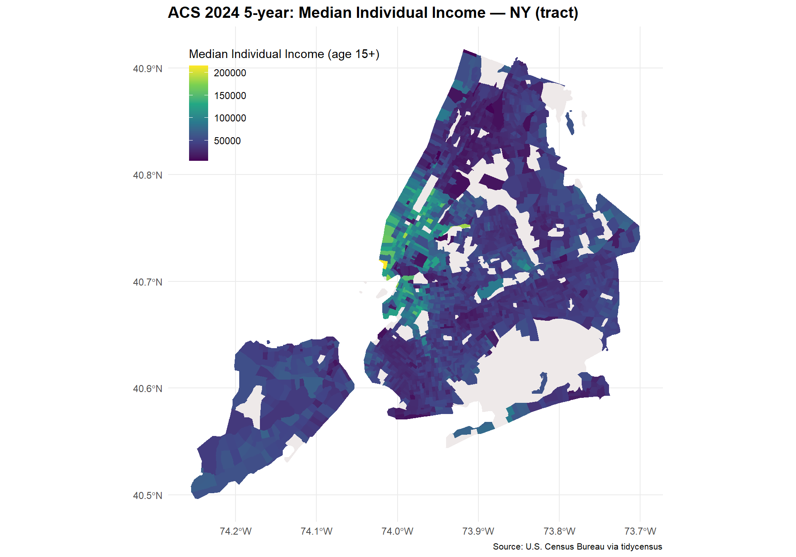

This assignment uses the U.S. Census Bureau’s 2020–2024 American Community Survey (ACS) 5-year estimates to examine income and poverty across New York City census tracts. The study area includes Bronx, Kings (Brooklyn), New York (Manhattan), Queens, and Richmond (Staten Island) counties. Census tracts make it possible to explore variation within the city rather than relying on a single citywide average.
The data come from S0701, Geographic Mobility by Selected Characteristics in the United States. Although its main topic is mobility, its total-population column also includes income and poverty estimates. The income measure is median individual income among people aged 15 and older, expressed in 2024 inflation-adjusted dollars. It is not median household income. The poverty measure covers people aged one and older for whom poverty status is determined.
Variable ID
Variable name
Measure
S0701_C01_048
income
Median individual income, age 15+
S0701_C01_050
pov
People age 1+ below 100% of the poverty level
S0701_C01_049
povden
People age 1+ for whom poverty status is determined
Analysis
# Packageslibrary(tidycensus)library(tigris)
Warning: package 'tigris' was built under R version 4.4.3
To enable caching of data, set `options(tigris_use_cache = TRUE)`
in your R script or .Rprofile.
library(sf)
Warning: package 'sf' was built under R version 4.4.3
Linking to GEOS 3.13.0, GDAL 3.10.1, PROJ 9.5.1; sf_use_s2() is TRUE
library(dplyr)
Attaching package: 'dplyr'
The following objects are masked from 'package:stats':
filter, lag
The following objects are masked from 'package:base':
intersect, setdiff, setequal, union
# A tibble: 10 × 3
name label concept
<chr> <chr> <chr>
1 S0701_C01_001 Estimate!!Total!!Population 1 year and over Geogra…
2 S0701_C01_002 Estimate!!Total!!Population 1 year and over!!AGE!!1 to… Geogra…
3 S0701_C01_003 Estimate!!Total!!Population 1 year and over!!AGE!!5 to… Geogra…
4 S0701_C01_004 Estimate!!Total!!Population 1 year and over!!AGE!!18 t… Geogra…
5 S0701_C01_005 Estimate!!Total!!Population 1 year and over!!AGE!!25 t… Geogra…
6 S0701_C01_006 Estimate!!Total!!Population 1 year and over!!AGE!!35 t… Geogra…
7 S0701_C01_007 Estimate!!Total!!Population 1 year and over!!AGE!!45 t… Geogra…
8 S0701_C01_008 Estimate!!Total!!Population 1 year and over!!AGE!!55 t… Geogra…
9 S0701_C01_009 Estimate!!Total!!Population 1 year and over!!AGE!!65 t… Geogra…
10 S0701_C01_010 Estimate!!Total!!Population 1 year and over!!AGE!!75 y… Geogra…
state_abbr <-"NY"geo_level <-"tract"# options: state, county, tract, block groupcounties <-c("Bronx", # Bronx"Kings", # Brooklyn"New York", # Manhattan"Queens", # Queens"Richmond"# Staten Island)my_vars <-c(income ="S0701_C01_048", # median individual income, age 15+pov ="S0701_C01_050", # people below 100 percent of the poverty levelpovden ="S0701_C01_049") # poverty denominatoryear_acs <-2024survey <-"acs5"acs_wide <-get_acs(geography = geo_level,variables = my_vars,state = state_abbr,county = counties,year = year_acs,survey = survey,geometry =TRUE,output ="wide")
A poverty count depends on the number of residents, so I divide it by the relevant population denominator:
\[
\text{Poverty rate}=\frac{\text{People below the poverty level}}{\text{People for whom poverty status is determined}}.
\]
ggplot(acs_wide) +geom_sf(aes(fill = incomeE), color =NA) +scale_fill_viridis_c(name ="Median Individual Income (age 15+)", na.value ="snow2") +labs(title =paste0("ACS ", year_acs, " 5-year: Median Individual Income — ", state_abbr, " (", geo_level, ")"),caption ="Source: U.S. Census Bureau via tidycensus") +theme_minimal() +theme(plot.title =element_text(size =14, face ="bold"),plot.caption =element_text(size =8),legend.position ="inside",legend.position.inside =c(0.03, 0.97),legend.justification =c(0, 1))

The map shows variation in median individual income across New York City census tracts. Several higher-income tracts appear in Manhattan, while many tracts elsewhere have lower estimated incomes. White areas represent missing income estimates, rather than zero income.
NAME pov_rate pov_moe povE povM
1 Census Tract 179.02; Queens County; New York 1.0000000 0.77138922 55 30
2 Census Tract 319; Bronx County; New York 0.8800000 0.19755951 88 22
3 Census Tract 284; Bronx County; New York 0.7925926 0.49207645 107 67
4 Census Tract 24; Bronx County; New York 0.7428571 0.58703307 78 62
5 Census Tract 385; Bronx County; New York 0.7287109 0.15328382 3731 1067
6 Census Tract 18.03; Kings County; New York 0.7272727 0.33874217 8 4
7 Census Tract 808; Kings County; New York 0.7013611 0.13706542 876 230
8 Census Tract 240; New York County; New York 0.6975993 0.08754615 1511 207
9 Census Tract 199.02; Queens County; New York 0.6969697 0.20014195 115 23
10 Census Tract 426; Queens County; New York 0.6644737 0.27461611 101 42
Queens County Census Tract 179.02 has the highest estimated poverty rate, at 100%, with a margin of error of approximately 77.14 percentage points. Bronx County Census Tract 319 has the second-highest estimate, at 88%, with a margin of error of approximately 19.76 percentage points.
NAME pov_rate pov_moe povE povM
1 Census Tract 916.02; Queens County; New York 0 0.87500000 0 14
2 Census Tract 539.02; Queens County; New York 0 0.63636364 0 14
3 Census Tract 53.03; Kings County; New York 0 0.10294118 0 14
4 Census Tract 702.02; Kings County; New York 0 1.00000000 0 14
5 Census Tract 97.02; Richmond County; New York 0 0.35000000 0 14
6 Census Tract 1.03; Queens County; New York 0 0.40000000 0 14
7 Census Tract 561; Queens County; New York 0 1.16666667 0 14
8 Census Tract 228.01; Richmond County; New York 0 0.37837838 0 14
9 Census Tract 918; Queens County; New York 0 1.75000000 0 14
10 Census Tract 752; Kings County; New York 0 0.01244444 0 14
All ten tracts in the bottom table have estimated poverty rates of zero. However, their margins of error vary substantially. These zero estimates should not be interpreted as proof that no residents experience poverty.
For Queens County Census Tract 179.02, the approximate 90% confidence interval is 100% ± 77.14 percentage points, or [22.86%, 177.14%]. For Bronx County Census Tract 319, it is 88% ± 19.76 percentage points, or [68.24%, 107.76%]. Although percentages cannot exceed 100%, these unbounded intervals illustrate the large uncertainty associated with the estimates. Restricting the endpoints to the feasible 0–100% range gives [22.86%, 100%] and [68.24%, 100%]. The intervals overlap substantially. Therefore, the ranking reflects the order of point estimates and does not establish that Queens Tract 179.02 has a higher underlying poverty rate than Bronx Tract 319. Overlap alone is not a formal test of the difference.
Methods note
I retrieved 2020–2024 ACS 5-year estimates using tidycensus for census tracts in New York City’s five counties. I selected three variables from Subject Table S0701: median individual income for residents aged 15 and older, the number of residents below the poverty level, and the corresponding poverty-status population denominator. I mapped income and calculated poverty rates to compare areas with different population sizes. I retained the margins of error and used moe_prop() to propagate uncertainty into the poverty proportions. The tables present the ten highest and lowest estimated poverty rates alongside their MOEs. Rates and MOEs in the R output are proportions; multiplying them by 100 gives percentages and percentage-point MOEs. Overlapping approximate 90% confidence intervals limit confidence in the rankings. Small populations and large MOEs require particular caution. These estimates summarize a five-year period rather than conditions in 2024 alone.